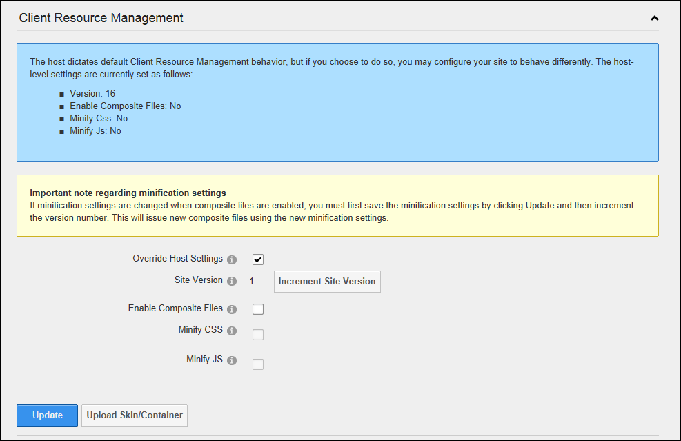

Configuring CRM for a Site
How to configure the Client Resource Management settings. Restricted to SuperUsers only.
As DNN allows for multiple extensions to be on the same page, there is a possibility that one or more of these extensions (skins/containers/modules) may use the same JavaScript or css files. To ensure only a single copy of these files are loaded DotNetNuke has always had an API that CSS/JavaScript files should call - this improved performance and safeguarded against extensions failing due to multiple copies existing. With the 6.1.0 release, this API was changed to use Client Resource Management, which in addition to the traditional function also allows users to optionally compress these files and combine them into a small number of downloads e.g. Three JavaScript files could be combined into one, improving performance as the browser only loads 1 file rather than 3. For more details on CRM see http://www.dnnsoftware.com/Community/Learn/Wiki/Page/Client-Resource-Management-API
Whilst the CRM will detect changes in files it's aware of and increment the version number accordingly so that users get updated versions of the file(s), it's possible to select the increment site version number to "force" this conversion
Composite files are used to reduce the numbers of file(s) loaded when a page loads. As browsers can load a limited number of files simultaneously (known as parallelism), reducing the number of files will improve performance as the browser does not have to wait to download one file before downloading another -in addition each file has an overhead in making the initial connection (known as network latency), so sites will less files also load quicker.
It is a best practice from a performance perspective to enable both minification and compression, however they are disabled by default as on rare occasions the minification/compression may cause the css or js files to not work as expected.
- Navigate to Host >
 Site Management and click the Edit
Site Management and click the Edit  button beside the title of the required site - OR - Navigate to Admin > Site Settings.
button beside the title of the required site - OR - Navigate to Admin > Site Settings.
- Select the Advanced Settings tab.
- Expand the Client Resource Management section.
- At Override Host Settings, select from these options:
- Unmark
 the check box to use the default settings. Skip to Step 6.
the check box to use the default settings. Skip to Step 6. - Mark
 the check box to modify the default settings.
the check box to modify the default settings.
- Site Version: The version number of the client resources on your site is displayed here. As this version number changes, each user will be forced to download the new version of the files. Click the Increment Site Version link to increment the site version. It is recommended the version be incremented only when necessary.
- Enable Composite Files: Composite files are combinations of resources (JavaScript and CSS) created to reduce the number of file requests by the browser. Enabling this setting will significantly increase the page loading speed.
- Minify CSS: CSS minification will reduce the size of the CSS code by using regular expressions to remove comments, whitespace and "dead css". This field is only available when composite files are enabled.
- Minify JS: JS minification will reduce the size of the JavaScript code using JSMin. This field is only available when composite files are enabled.
-
Click the Update button.
